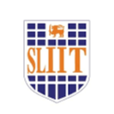

York St. John University
Master of Science - MS, Computer Science
Jan 2023 - Mar 2024
Grade: Merit Award - (2.1)
- Machine Learning
- Cloud Computing
- Azure Cloud
- Agile & Scrum methodologies
- Ontology Design
- Python
- UI/UX design (Figma)
- Internet of Things (IoT)
Sheffield Hallam University
Bachelor of Engineering - BE, Software Engineering
2016 - 2018
Grade: Second Class Honours (1st Division)
- Java, JavaScript, HTML, CSS, Angular
- OOP Concepts, Data Structures and Algorithms
- Oracle Database, DBMS
- Case Studies in Software development
- Cloud Computing, Normalization
- UML Diagrams, Software Methodologies
University of Kelaniya Sri Lanka
Bachelor of Science - BS, Physical Sciences
2017 - 2020
Activities and Societies: Former Secretary of Mathematics Students' Society of the university
- Integration, Relational Algebra, Matrix Algebra
- Linear Algebra, Differentiation, Vector Analysis
- Numerical Methods, Computational Mathematics
- Scientific Computing, Mechanics
- Mathematics for Finance
- Skills: Graduate Level, Problem Solving, Communication, Mathematics

SLIIT
Bachelor of Science - BS, Computer Software Engineering
2016 - 2020
- Computer Fundamentals, Probability and Statistics
- Java, Python, JavaScript, HTML, CSS, Angular
- OOP Concepts, Data Structures and Algorithms
- MySQL, Database Management Systems (DBMS)
- Normalization, Entity-Relationship (ER) Diagrams
- Cloud Computing, Internet of Things (IoT)
- Machine Learning, Deep Learning
- UML Diagrams, Software Methodologies
- Version Controlling (GitHub)
- Skills: Java Virtual Machine (JVM), Jest, Python, Graduate Level, Query Writing, Java, Software Development, Open Plan, React.js, OOP, Angular, Problem Solving, MySQL, Software Engineering Practices, E-Commerce, Communication, Version Control, HTML5, Full-Stack Development, Next.js, Web Services API, Software Engineers, Responsive Web Design, PL/SQL, REST APIs, Tailwind CSS, Software Analysis, JavaScript, AngularJS
Ananda College
Mathematics
2015
Activities and Societies: President’s Scout award winner, Assistant Troop Leader - Ananda College Scout Troop, Colors winner – Ananda College
- Represented the Colombo Centenary International Scout Jamboree 2014
- Represented the RISGO CENTENNIAL International Scout Jamboree 2013